# Guardamos un número en un objeto llamado cantidad.
cantidad <- 10
# Escribimos su nombre para ver el valor guardado.
cantidad[1] 10De los datos a la investigación
24 de noviembre de 2026
Taller de Software · Práctica en R
Recorrido práctico de preparación de datos, análisis univariado, visualización y análisis bivariado en R con la ENPCCL 2024.
Al terminar esta sesión podrás preparar datos sociales, construir tablas y gráficos, comparar grupos e interpretar resultados en R. Practicaremos con la Encuesta Nacional de Participación Cultural y Comportamiento Lector 2024 (ENPCCL), del Ministerio de las Culturas, las Artes y el Patrimonio. La versión pedagógica tiene 12.263 informantes seleccionados y 20 variables. Una fila corresponde a una persona informante Kish; el número de residentes describe su vivienda. Los resultados serán descriptivos y no ponderados: no representan estimaciones de toda la población chilena.
Fuente y documentación oficial de ENPCCL.
Antes de elegir una tabla, un estadístico o un gráfico, identifica qué mide tu variable.
| Tipo de variable | ¿Cómo reconocerla? | Ejemplo | ¿Qué análisis y gráfico usar? |
|---|---|---|---|
| Categórica nominal | Categorías sin orden natural. | Producción de artesanías: Sí / No (inv_artesania). |
Frecuencias y porcentajes; gráfico de barras. |
| Categórica ordinal | Categorías que pueden ordenarse. | Frecuencia de lectura: diaria, semanal, mensual, etc. (lectura_libros). |
Frecuencias, porcentajes y acumulados; barras ordenadas. |
| Cuantitativa discreta | Cantidades que se cuentan, generalmente números enteros. | Número de residentes de la vivienda (ih1); cantidad de libros (libros_cant). |
Media, mediana, desviación estándar y cuartiles; histograma o diagrama de caja. |
| Cuantitativa continua | Cantidades que se miden y pueden tomar valores intermedios. | Tiempo de viaje en horas (ejemplo ilustrativo, no una variable de esta base). | Media, mediana, desviación estándar y cuartiles; histograma o diagrama de caja. |
Regla rápida: ¿son categorías o cantidades? Si son categorías, pregunta si tienen un orden. Si son cantidades, distingue si se cuentan o se miden en una escala continua.
Importante: que una variable esté almacenada como número en R no significa que sea cuantitativa. Por ejemplo, 1 = Sí y 2 = No son códigos de categorías, no cantidades. Consulta siempre el diccionario antes de elegir el análisis.
| Si necesitas… | Consulta |
|---|---|
| Organizar archivos y crear mi script | Preparar el proyecto |
| Entender objetos y funciones | Primeros comandos |
| Cargar tu encuesta | Importar y comprobar |
| Revisar códigos, seleccionar o filtrar | Explorar y preparar |
| Calcular frecuencias, acumulados o estadísticos | Análisis univariado |
| Elegir y construir un gráfico | Visualización |
| Comparar dos categóricas | Análisis bivariado |
| Guardar tablas y gráficos | Exportación |
| Practicar con una variable nueva | Actividad práctica |
| Ver más alternativas o resolver errores | Biblioteca de herramientas |
Sigue el orden de las secciones 1 a 7 y copia cada procedimiento a tu propio script. Ejecuta los bloques de arriba hacia abajo. Los desplegables son para consultar cuando los necesites. La actividad final es formativa; la biblioteca no agrega exigencias al trabajo final.
Demostración guiada — criterios 2, 3 y 8 del trabajo final.
R es el lenguaje que realiza los cálculos. RStudio y Positron son programas que nos permiten escribir código, ejecutarlo y organizar los resultados. No son lo mismo que R.
Paso 1. En el explorador de archivos, crea una carpeta llamada Mi_investigacion en un lugar que recuerdes.
Paso 2. Abre esa carpeta en tu editor:
Selecciona File → New Project → Existing Directory, elige Mi_investigacion y crea el proyecto. El archivo .Rproj permite volver a abrirlo.
Selecciona File → Open Folder y abre Mi_investigacion. Inicia una sesión de R en la consola. No necesitas un archivo .Rproj para trabajar en Positron.
Paso 3. Crea manualmente las carpetas input, procesamiento y output. Dentro de output, crea tablas y graficos.
Paso 4. Descarga el CSV de Cultura 2024 y el diccionario. Guárdalos en input/ con sus nombres originales. Si el navegador abre el CSV en vez de descargarlo, usa Guardar como. No lo abras y vuelvas a guardar en Excel.
Paso 5. Crea un script de R: en RStudio, File → New File → R Script; en Positron, crea un archivo nuevo y guárdalo con extensión .R. Llámalo analisis.R y guárdalo dentro de procesamiento/. Escribe allí los códigos de la clase, no solo en la consola.
La estructura debería quedar así:
Mi_investigacion/
├── input/
│ ├── Cultura_2024.csv
│ └── Diccionario_variables.csv
├── procesamiento/
│ └── analisis.R
└── output/
├── tablas/
└── graficos/input conserva los datos entregados; procesamiento conserva las instrucciones; output recibe las tablas y gráficos. Así podemos repetir el análisis sin sobrescribir los datos originales.
Desde la carpeta principal, ejecuta cada comando solo si la carpeta todavía no existe. También puedes crearlas manualmente como acabamos de hacer.
# Creamos la carpeta para los datos.
dir.create("input")
# Creamos la carpeta para nuestro script.
dir.create("procesamiento")
# Creamos la carpeta para resultados.
dir.create("output")
# Creamos las subcarpetas dentro de output.
dir.create("output/tablas")
# Creamos la carpeta donde se guardarán los gráficos.
dir.create("output/graficos")Si aparece un aviso de que la carpeta ya existe, no necesitas crearla de nuevo.
| Elemento | Para qué sirve |
|---|---|
| Consola | Ejecuta instrucciones y muestra resultados o errores. |
| Editor de scripts | Permite escribir y guardar instrucciones para volver a ejecutarlas. |
| Environment / Variables | Muestra los objetos que existen en la sesión actual. |
| Files / Explorer | Permite encontrar los archivos y carpetas de la investigación. |
| Plots | Muestra los gráficos que generamos. |
Selecciona una línea completa en tu script y usa Run (habitualmente Ctrl+Enter en Windows o Cmd+Enter en Mac, según la configuración del editor). Para varias líneas, selecciónalas y ejecútalas juntas. Guarda con Ctrl+S o Cmd+S. Para repetir todo, guarda el archivo y ejecútalo de principio a fin desde el editor, o usa source("procesamiento/analisis.R") desde la carpeta principal.
Guardar el script no equivale a guardar los objetos de la sesión. Los objetos pueden desaparecer al reiniciar R; el script permite volver a crearlos. Los archivos exportados permanecen en el disco.
Un objeto es un nombre que usamos para guardar información. Una función realiza una operación; recibe argumentos entre paréntesis. El símbolo <- guarda el resultado en el objeto que está a su izquierda.
[1] 10Un vector reúne varios valores. c() significa combinar; las comas separan los elementos.
[1] 21.25Estas edades son un ejemplo didáctico, no datos de la encuesta. Las funciones mean(), table(), summary() y read.csv() vienen con R; no necesitas instalar paquetes para usarlas.
Un paquete añade herramientas a R. Usaremos R base para calcular resultados y ggplot2 para construir gráficos. Instalar y cargar son dos cosas distintas:
Ejecuta en tu consola si todavía no tienes el paquete. Necesitas conexión a internet y permiso de escritura en la biblioteca de R.
Si library(ggplot2) dice que no existe el paquete, instálalo primero. Si falla la instalación, lee el mensaje, revisa la conexión y solicita ayuda antes de comenzar los gráficos. Puedes avanzar con los cálculos estadísticos mientras tanto. No instales todos los paquetes de la biblioteca: son opcionales.
Antes de leer los datos, comprueba desde qué carpeta está trabajando R. Una ruta relativa parte de esa carpeta; una ruta absoluta empieza desde el disco o el directorio raíz. No copies rutas personales de otro computador.
Ejecuta estas instrucciones en tu propia sesión. Los resultados de esta página se calculan con el mismo CSV, desde su ubicación en el sitio. En tu computador, usa las rutas relativas que aparecen en el código.
Si no ves input, abre la carpeta correcta. La ubicación del archivo analisis.R no cambia automáticamente el directorio de trabajo.
[1] TRUESi obtienes FALSE, vuelve a getwd() y list.files("input"). No continúes hasta encontrar el CSV.
Paso siguiente: leer el archivo.
# Leemos el archivo CSV y guardamos la base en un objeto llamado datos.
# UTF-8-BOM permite leer tildes y caracteres especiales, incluso si el CSV incluye una marca de codificación.
# na.strings indica qué textos representan valores perdidos.
datos <- read.csv(
archivo,
fileEncoding = "UTF-8-BOM",
na.strings = c("", "NA"),
check.names = FALSE
)read.csv() lee las columnas separadas por comas. check.names = FALSE conserva sus códigos originales. El objeto datos queda disponible en la sesión.
Comprobar la importación.
[1] "ih1" "libros_cant"
[3] "artesania_veces" "cine_veces"
[5] "religion_veces" "rph_sexo"
[7] "rph_pert_indigena" "rph_nacionalidad"
[9] "edad_aux" "rph_nse"
[11] "rph_nivel_consolidado" "cultura_general_3"
[13] "scree_asist_artesania_vida" "scree_asist_cine_vida"
[15] "scree_asist_religion_vida" "scree_asist_ppoo_vida"
[17] "scree_asist_memoria_vida" "scree_asist_arqueo_vida"
[19] "inv_artesania" "lectura_libros" Cambia el nombre del CSV por el de tu encuesta. Conserva la ruta relativa y verifica que el archivo exista.
Resultado esperado: 12.263 filas y 20 columnas. Si no coincide, revisa qué archivo abriste. getwd() muestra la carpeta activa. file.exists() debe devolver TRUE.
Para explorar registros en tu computador (no se muestran microdatos individuales en la página):
Un número almacenado como entero no es necesariamente cuantitativo: rph_sexo usa códigos 1 y 2 para categorías, no cantidades. Consulta el diccionario antes de aplicar cualquier estadístico.
Pregunta rápida: ¿qué representa una fila? ¿Tiene sentido sumar los códigos de sexo? No: cada fila corresponde a un informante y los códigos representan categorías.
Demostración y práctica guiada — criterios 2 y 3.
| Código | Qué mide | Nivel |
|---|---|---|
inv_artesania |
Ha producido artesanías o manualidades | Nominal |
lectura_libros |
Frecuencia de lectura | Ordinal |
ih1 |
Residentes de la vivienda | Cuantitativa discreta |
libros_cant |
Libros leídos en los últimos 12 meses | Cuantitativa discreta |
rph_sexo |
Sexo registrado en la encuesta | Nominal |
Imagina esta pequeña base: cada fila es una persona, cada columna es una variable y cada celda contiene un dato.
| Fila | edad_aux |
ih1 |
libros_cant |
|---|---|---|---|
| Persona A | 1 | 3 | 4 |
| Persona B | 2 | 2 | NA |
| Persona C | 1 | 5 | 8 |
Ejemplo ficticio, no son registros de la encuesta. Las letras identifican las filas solo para ilustrar el ejemplo.
datos$ih1 accede a la columna destacada (3, 2, 5). $ indica qué columna queremos.datos[variables] selecciona las columnas nombradas en variables, sin quitar personas; c() reúne esos nombres.subset(datos, edad_aux == 1) conservaría las filas A y C.NA significa que falta el dato de libros de B, no que haya leído cero. Conservaremos la base original.
# Guardamos los nombres de las cinco variables que queremos estudiar.
variables <- c("inv_artesania", "lectura_libros", "ih1", "libros_cant", "rph_sexo")
# Creamos una nueva base con esas columnas, sin eliminar filas.
seleccion <- datos[variables]
# Comprobamos las dimensiones de la nueva base.
dim(seleccion)[1] 12263 5Cambia los nombres dentro de c() por las columnas de tu investigación.
Filtrar filas. A diferencia de seleccionar columnas, filtrar reduce el número de personas incluidas. == pregunta si dos valores son iguales; no se utiliza para guardar objetos. subset() omite los casos donde la condición no se puede evaluar (NA).
[1] 2494Cambia edad_aux == 1 por una condición que esté respaldada por tu pregunta y diccionario.
Veamos cómo cambia una respuesta de inv_artesania al preparar una copia llamada artesania:
| Código original | Paso 2 · Limpiar | Paso 3 · Etiquetar |
|---|---|---|
| 1 (Sí) | 1 | Sí |
| 2 (No) | 2 | No |
| 88 (No sabe) | NA | NA |
| 96 (Sin dato) | NA | NA |
| 99 (No responde) | NA | NA |
Los códigos originales se conservan. Estos códigos especiales corresponden a esta pregunta: consulta el diccionario antes de reutilizarlos. NA no equivale a cero ni a «No».
Compara los códigos observados con el diccionario antes de etiquetar. Si aparece un código desconocido, detente y acláralo: factor() lo convertiría en NA.
Paso 1. Revisar los códigos.
1 2 88 96 99 <NA>
3887 8367 3 1 5 0 Paso 2. Preparar una copia y tratar los códigos especiales.
# Creamos una copia de la variable para conservar sus códigos originales.
datos$artesania <- datos$inv_artesania
# %in% comprueba si cada respuesta pertenece al conjunto de códigos especiales.
perdidos <- datos$artesania %in% c(88, 96, 99)
# Contamos cuántos TRUE y FALSE encontramos.
table(perdidos)perdidos
FALSE TRUE
12254 9
1 2 <NA>
3887 8367 9 perdidos es un vector de valores lógicos: TRUE si el código es especial, FALSE si no lo es. Los NA que ya existían se conservan.
Paso 3. Etiquetar las categorías.
factor() convierte códigos en categorías. levels indica los códigos válidos; labels indica sus nombres, en el mismo orden. No cambies el orden de los códigos sin cambiar también sus etiquetas.
Paso 4. Contar casos válidos y excluidos.
[1] 9[1] 12254Cómo leer el resultado. Los casos excluidos no son respuestas «No». La tabla de frecuencias sustantivas utilizará solo los casos válidos.
Cambia la columna, los códigos y las etiquetas a partir del diccionario de tu propia variable. No copies automáticamente 88, 96 y 99.
Repetimos la limpieza con lectura. Ejecuta este bloque antes de calcular los acumulados. Usa el mismo procedimiento anterior. Los códigos válidos van del 1 al 7 (de mayor frecuencia a «No leo»); los especiales son 88, 96 y 99. ordered = TRUE conserva el orden de las categorías, sin convertirlas en cantidades.
1 2 3 4 5 6 7 88 99 <NA>
2111 2735 1723 513 258 343 4564 15 1 0 # Creamos una copia y marcamos las respuestas especiales.
datos$frecuencia_lectura <- datos$lectura_libros
perdidos_lectura <- datos$frecuencia_lectura %in% c(88, 96, 99)
datos$frecuencia_lectura[perdidos_lectura] <- NA
# Etiquetamos los códigos del 1 al 7 (1:7) en su orden original.
datos$frecuencia_lectura <- factor(
datos$frecuencia_lectura,
levels = 1:7,
labels = c("Diaria", "Semanal", "Mensual", "Cada 3 meses",
"Cada 6 meses", "Anual", "No lee"),
ordered = TRUE
)
# Comprobamos el resultado.
table(datos$frecuencia_lectura, useNA = "always")
Diaria Semanal Mensual Cada 3 meses Cada 6 meses Anual
2111 2735 1723 513 258 343
No lee <NA>
4564 16 Preparamos el sexo para el cruce posterior. Revisa el diccionario: 1 = Hombre, 2 = Mujer.
libros_cant tiene respuestas no disponibles. No reemplaces NA por cero: el universo de la pregunta debe revisarse en el cuestionario. En estas cantidades el diccionario solo documenta celdas vacías como perdidas; 99 puede ser un número válido de libros. No elimines valores altos automáticamente.
Min. 1st Qu. Median Mean 3rd Qu. Max.
1.000 2.000 3.000 2.837 4.000 17.000 Min. 1st Qu. Median Mean 3rd Qu. Max. NAs
1.000 2.000 3.000 7.343 7.000 500.000 4595 [1] 12263[1] 7668[1] 4595Demostración guiada. Una distribución describe una variable a la vez. Revisa las tres pestañas en orden: nominal, ordinal y cuantitativa. Elige el procedimiento según el nivel de medición.
¿Qué proporción de las personas con respuesta válida declara producir artesanía o manualidades? table() excluye NA por defecto; prop.table() divide por el total válido. Multiplicar por 100 convierte proporciones en porcentajes.
Sí No
3887 8367
Sí No
0.3172025 0.6827975
Sí No
31.72 68.28 Organizar una tabla para el informe. data.frame() reúne columnas en una tabla; names() recupera las etiquetas; as.numeric() extrae los números de una tabla de R. Conservamos los porcentajes sin redondear para los cálculos posteriores.
| Respuesta | Frecuencia absoluta | Porcentaje válido (%) |
|---|---|---|
| Sí | 3887 | 31.72 |
| No | 8367 | 68.28 |
| Total válido | 12254 | 100.00 |
[1] 12254[1] 100Usa table(datos$tu_variable) después de preparar esa variable.
El total debe corresponder a sus respuestas válidas.
Entre los 12254 casos válidos (9 excluidos), el 31.72 % declara haber producido artesanías o manualidades. La categoría más frecuente se identifica con la frecuencia mayor; mode() de R no calcula la moda estadística. No afirmes que este porcentaje estima a toda la población chilena.
Acumulamos desde la frecuencia de lectura mayor hacia la menor. cumsum() suma progresivamente. No calcules acumulados en categorías nominales.
Diaria Semanal Mensual Cada 3 meses Cada 6 meses Anual
17.23687 39.56887 53.63763 57.82641 59.93304 62.73373
No lee
100.00000 # Reunimos los resultados y sus acumulados en una tabla.
tabla_lectura <- data.frame(
categoria = names(f_lectura),
frecuencia = as.numeric(f_lectura),
porcentaje = as.numeric(pct_lectura)
)
# cumsum() suma cada categoría y las anteriores.
tabla_lectura$n_acumulado <- cumsum(tabla_lectura$frecuencia)
tabla_lectura$pct_acumulado <- cumsum(tabla_lectura$porcentaje)
tabla_lectura| Frecuencia de lectura | N | % válido | N acumulado | % acumulado |
|---|---|---|---|---|
| Diaria | 2111 | 17.24 | 2111 | 17.24 |
| Semanal | 2735 | 22.33 | 4846 | 39.57 |
| Mensual | 1723 | 14.07 | 6569 | 53.64 |
| Cada 3 meses | 513 | 4.19 | 7082 | 57.83 |
| Cada 6 meses | 258 | 2.11 | 7340 | 59.93 |
| Anual | 343 | 2.80 | 7683 | 62.73 |
| No lee | 4564 | 37.27 | 12247 | 100.00 |
Define el orden de los niveles antes de acumular.
Cambia la variable, no el orden sin justificación.
De 12247 respuestas válidas (16 casos excluidos), el acumulado hasta «Mensual» es 53.64 %: lee al menos una vez al mes. Si inviertes el orden, cambia el significado. El último acumulado debe ser 100 %.
Media, mediana, desviación estándar, mínimo, máximo y cuartiles resumen posición y dispersión. na.rm = TRUE omite NA solo para esa operación; no limpia códigos especiales. quantile() usa por defecto el método 7 de R.
[1] 12263[1] 2.836745[1] 3[1] 1.512552[1] 1[1] 1725% 75%
2 4 Comparamos con libros. Ejecuta el siguiente bloque para guardar los valores disponibles de cada cantidad. na.omit() elimina los NA de un vector, no de toda la base. Aquí x contiene residentes y y contiene libros. Los reutilizaremos en la tabla resumen.
[1] 7668[1] 7.343245[1] 3Esta es una alternativa para el reporte. Cada vector contiene los ocho estadísticos en el mismo orden que la primera columna.
# Guardamos los nombres de los estadísticos en el orden que queremos mostrar.
medidas <- c("N válido", "Media", "Mediana", "DE", "Mínimo", "Máximo", "Q1", "Q3")
# Reunimos los resultados de residentes en un vector.
resumen_residentes <- c(
length(x), mean(x), median(x), sd(x), min(x), max(x),
quantile(x, 0.25), quantile(x, 0.75)
)
# Repetimos exactamente el orden para los libros.
resumen_libros <- c(
length(y), mean(y), median(y), sd(y), min(y), max(y),
quantile(y, 0.25), quantile(y, 0.75)
)
# Construimos la tabla con las dos columnas de resultados.
tabla_cantidades <- data.frame(
estadistico = medidas,
residentes = resumen_residentes,
libros = resumen_libros
)
# Consultamos la tabla en R.
print(tabla_cantidades, row.names = FALSE)| Estadístico | Residentes (personas) | Libros (cantidad) |
|---|---|---|
| N válido | 12263.00 | 7668.00 |
| Media | 2.84 | 7.34 |
| Mediana | 3.00 | 3.00 |
| DE | 1.51 | 18.12 |
| Mínimo | 1.00 | 1.00 |
| Máximo | 17.00 | 500.00 |
| Q1 | 2.00 | 2.00 |
| Q3 | 4.00 | 7.00 |
Sustituye x e y por cantidades de tu encuesta.
No calcules medias de códigos nominales u ordinales.
El N válido de residentes es 12263 y el de libros es 7668; se excluyen 4595 casos en este último análisis. Para libros, la media es 7.34 y la mediana es 3; el valor máximo es 500. La media superior a la mediana es compatible con una cola derecha, que debemos examinar gráficamente. Q1 y Q3 delimitan aproximadamente el 50 % central. No se justifica eliminar el máximo solo por ser elevado. Las dos columnas tienen unidades distintas y describen universos disponibles distintos.
Comprueba tu comprensión: ¿por qué no calculamos una media de lectura_libros? ¿Por qué el N válido de libros no tiene que coincidir con el de residentes?
Demostración guiada — criterio 5. Todos los gráficos siguen la misma receta: ggplot() elige los datos, aes() elige las variables y geom_*() dibuja. Con + agregamos capas; labs() escribe títulos y theme_minimal() mejora la presentación. base_size = 14 solo aumenta el tamaño del texto.
Abre las pestañas Barras, Histograma y Diagrama de caja en ese orden. Fuente de los gráficos: ENPCCL 2024, versión pedagógica, resultados descriptivos no ponderados. Incluye esta información al insertar una figura en tu informe.
Todos los gráficos del taller utilizan ggplot2. Cárgalo una vez al comenzar cada sesión de R. Si aún no está instalado, ejecuta install.packages("ggplot2") en la consola y luego library(ggplot2). No se instalarán paquetes durante la renderización.
Primero dibujamos un gráfico de frecuencias con los casos válidos. geom_bar() cuenta filas; geom_col() utiliza un valor que ya calculamos, como el porcentaje. aes(x = ...) indica qué variable va en el eje horizontal.
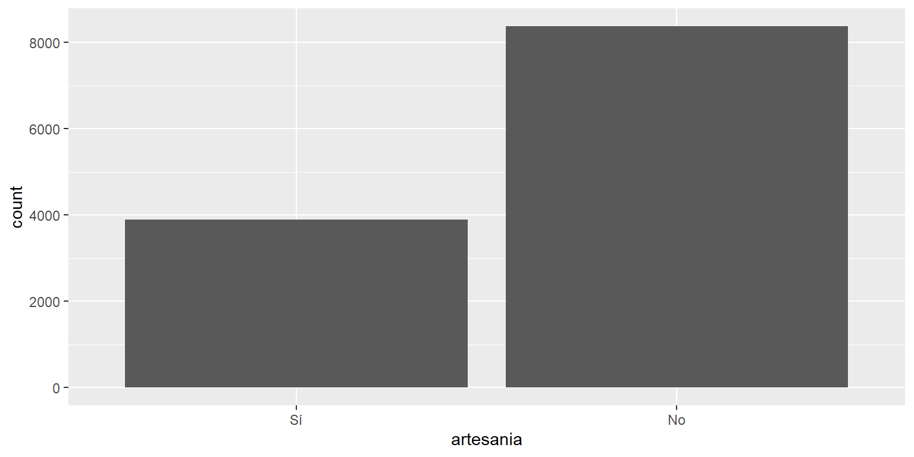
Usamos ahora tabla_artesania, que contiene los porcentajes calculados antes. geom_col() utiliza esos valores; fill fija el color. Guardamos el gráfico con <- para exportarlo después y usamos print() para verlo.
# Dibujamos los porcentajes que ya calculamos.
g_barras <- ggplot(tabla_artesania, aes(x = categoria, y = porcentaje)) +
geom_col(fill = "steelblue") +
labs(title = "Producción de artesanías", x = "Respuesta",
y = "Porcentaje válido (%)") +
theme_minimal(base_size = 14)
# Mostramos el gráfico guardado.
print(g_barras)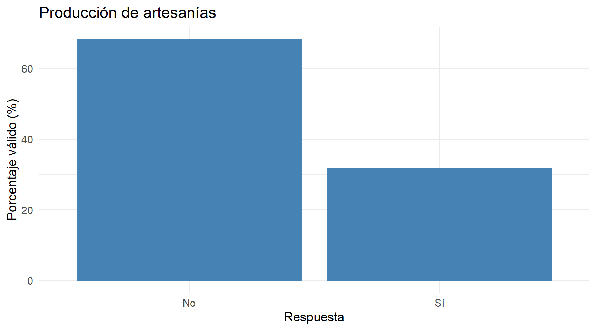
Las barras muestran el porcentaje de cada respuesta entre casos válidos. No confundas los porcentajes con frecuencias absolutas.
Prueba otro color o título. Para otro gráfico, cambia el objeto tabla_artesania por tu tabla de frecuencias y adapta los nombres de las columnas en aes().
No cambies los datos para mejorar el aspecto.
Representa una distribución cuantitativa por intervalos contiguos. Las barras son contiguas; no es un gráfico para categorías nominales. Para residentes, utilizamos intervalos de un entero, centrados en cada valor.
Cambia binwidth para ajustar el ancho de intervalos según las unidades y la variabilidad.
# Representamos el número de residentes con intervalos de una persona.
g_hist <- ggplot(datos, aes(x = ih1)) +
geom_histogram(binwidth = 1, boundary = 0.5, na.rm = TRUE,
fill = "steelblue") +
labs(title = "Residentes en la vivienda", x = "Personas", y = "Frecuencia") +
theme_minimal(base_size = 14)
print(g_hist)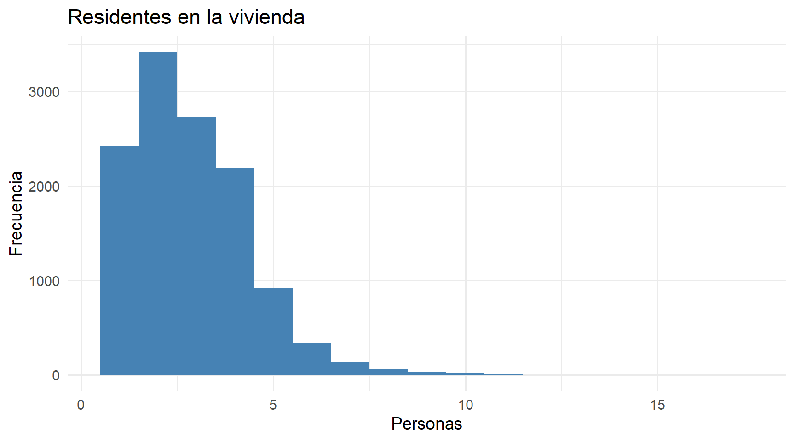
Observa dónde se concentran los casos y si la frecuencia disminuye hacia valores altos. binwidth = 1 crea intervalos de una persona; boundary = 0.5 sitúa sus límites entre enteros. na.rm = TRUE omite los NA del gráfico. Cambiar binwidth modifica los intervalos, no los datos.
Antes de interpretar la caja de libros, identifica sus partes:
La caja va de Q1 a Q3 (aproximadamente el 50 % central). Los bigotes llegan hasta los valores observados más extremos que están dentro de 1,5 veces el IQR desde los bordes de la caja; no siempre son el mínimo y el máximo. Los puntos fuera de ellos no son automáticamente errores.
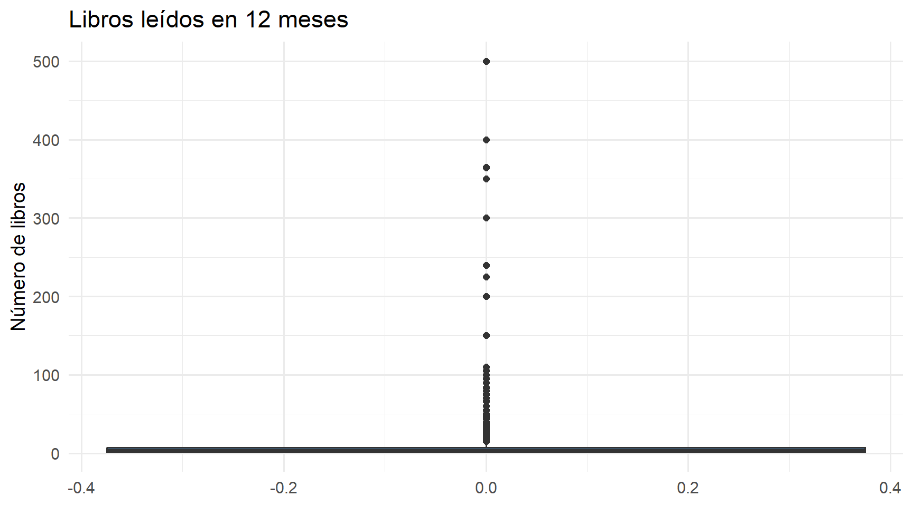
Cambia libros_cant por tu variable cuantitativa.
Identifica la línea de la mediana y los puntos aislados en el gráfico de libros.
Si la caja aparece comprimida por valores muy altos, no los elimines para mejorar la apariencia. Puedes mostrar una vista ampliada adicional identificándola como tal (ver biblioteca).
Demostración guiada — criterio 6. ¿Qué diferencias descriptivas se observan en la producción de artesanías según el sexo registrado? Usaremos dos categóricas. Cada celda cuenta personas que cumplen ambas condiciones; los marginales suman filas o columnas. El N conjunto excluye los casos no válidos en cualquiera de las dos.
# Cruzamos dos variables: sexo en filas y artesania en columnas.
# table() excluye automáticamente los casos con NA en cualquiera de las dos.
cruce <- table(datos$sexo, datos$artesania)
# Mostramos los recuentos de cada combinación.
cruce
# Añadimos los totales de las filas y columnas.
addmargins(cruce)| Sí | No | Sum | |
|---|---|---|---|
| Hombre | 1020 | 4356 | 5376 |
| Mujer | 2867 | 4011 | 6878 |
| Sum | 3887 | 8367 | 12254 |
Cambia sexo y artesania por tus dos factores preparados. Revisa qué variable quedará en filas.
Si una fila o columna suma cero, no calcules un porcentaje con ese denominador: revisa las categorías sin casos. sum(cruce) cuenta solo las personas con ambas respuestas válidas.
¿Qué porcentaje de cada grupo de sexo declara producir artesanía? El denominador es el total de la fila. Comparamos los porcentajes en la misma columna entre grupos.
| Sí | No | |
|---|---|---|
| Hombre | 18.97 | 81.03 |
| Mujer | 41.68 | 58.32 |
Entre quienes sí producen artesanía (o quienes no), ¿cómo se distribuyen los grupos de sexo? El denominador es ahora el total de la columna; la pregunta cambió.
| Sí | No | |
|---|---|---|
| Hombre | 26.24 | 52.06 |
| Mujer | 73.76 | 47.94 |
Cambia el selector y observa la misma celda «Sí» en las tres vistas: recuento, porcentaje dentro de la fila y porcentaje dentro de la columna. Fíjate en qué total vale 100 %. Los números se calculan desde la base real.
En los casos válidos, el porcentaje de «Sí» entre hombres es 18.97 % y entre mujeres 41.68 %. La diferencia mujeres menos hombres es 22.71 puntos porcentuales. Es una comparación descriptiva; no demuestra causalidad ni significación estadística. Una diferencia pequeña también es un resultado válido.
Cada barra representa un grupo de sexo. Primero conservamos los casos válidos en ambas variables. & significa «y». En aes(), fill = artesania distingue las respuestas por color; position = "fill" divide cada barra por su total, igual que los porcentajes por fila.
# Quitamos solo los casos sin respuesta en alguna de las dos variables.
datos_cruce <- subset(datos, !is.na(sexo) & !is.na(artesania))
# Dibujamos una barra proporcional para cada grupo.
g_cruce <- ggplot(datos_cruce, aes(x = sexo, fill = artesania)) +
geom_bar(position = "fill") +
labs(title = "Producción artesanal según sexo", x = "Sexo",
y = "Proporción dentro del grupo", fill = "Respuesta") +
theme_minimal(base_size = 14)
print(g_cruce)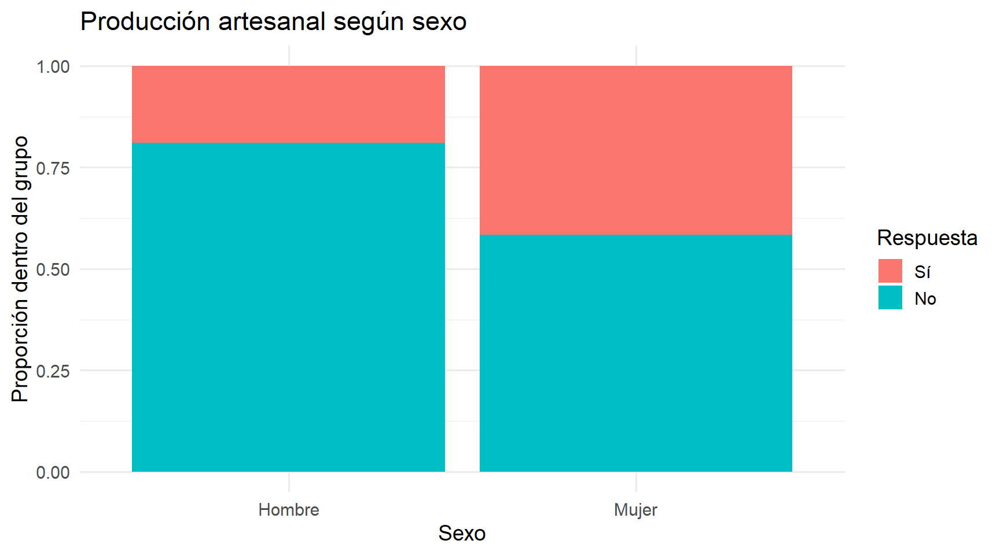
El eje va de 0 a 1: 0,4 equivale al 40 %. La altura de cada color representa la proporción dentro de ese grupo, no el número total de personas. La versión en porcentajes de 0 a 100 está en la biblioteca.
Cómo leer el resultado. Cada barra representa el 100 % de un grupo con respuesta válida en las dos variables. Compara el mismo color entre grupos. No implica causalidad.
Demostración — criterio 8. Guarda el código, tablas y gráficos. En tu proyecto las salidas van a output/. El sitio escribe en una carpeta temporal durante la renderización.
1. Crear las carpetas.
Si ya creaste output/tablas y output/graficos al iniciar, no necesitas hacer nada más. Si no existen, créalas ahora desde el explorador de archivos. file.path() une partes de una ruta con el separador correcto. Por ejemplo, file.path(salida, "tablas", "artesania.csv") equivale a output/tablas/artesania.csv en tu proyecto.
2. Guardar una tabla. row.names = FALSE evita agregar una columna de números de fila. Si quieres guardar otras tablas, abre el desplegable.
Para exportar tabla_lectura y tabla_cantidades, ejecuta antes sus bloques «Organizar la tabla» en el análisis univariado. Los objetos cruce, por_fila y por_columna se crean en el análisis bivariado.
# Guardamos también la tabla ordinal.
write.csv(tabla_lectura, file.path(salida, "tablas", "lectura.csv"), row.names = FALSE)
# Exportamos los estadísticos cuantitativos.
write.csv(tabla_cantidades, file.path(salida, "tablas", "cantidades.csv"), row.names = FALSE)
# Conservamos los nombres de fila del cruce, porque son categorías.
write.csv(as.matrix(cruce), file.path(salida, "tablas", "cruce_n.csv"))
# Guardamos porcentajes por fila.
write.csv(as.matrix(por_fila), file.path(salida, "tablas", "cruce_pct_fila.csv"))
# Guardamos porcentajes por columna.
write.csv(as.matrix(por_columna), file.path(salida, "tablas", "cruce_pct_columna.csv"))3. Guardar un gráfico.
ggsave() guarda el objeto de gráfico indicado en plot. width y height son el ancho y alto (en pulgadas por defecto); dpi define la resolución.
# Guardamos también el histograma.
ggsave(file.path(salida, "graficos", "residentes.png"), plot = g_hist, width = 7, height = 4, dpi = 300)
# Guardamos el diagrama de caja.
ggsave(file.path(salida, "graficos", "libros.png"), plot = g_caja, width = 7, height = 4, dpi = 300)
# Guardamos la visualización del cruce.
ggsave(file.path(salida, "graficos", "cruce.png"), plot = g_cruce, width = 7, height = 4, dpi = 300)[1] TRUE [1] "graficos/artesania.png" "graficos/cruce.png"
[3] "graficos/libros.png" "graficos/residentes.png"
[5] "tablas/artesania.csv" "tablas/cantidades.csv"
[7] "tablas/cruce_n.csv" "tablas/cruce_pct_columna.csv"
[9] "tablas/cruce_pct_fila.csv" "tablas/lectura.csv" Cambia el nombre del archivo y el objeto plot = para guardar otro gráfico.
Para comprobar reproducibilidad, abre una sesión nueva de R, ejecuta el script desde el principio y revisa si se regeneran las salidas. No necesitas Quarto para entregar el trabajo final.
Ahora utiliza scree_asist_arqueo_vida: visita a edificios o barrios patrimoniales, o sitios arqueológicos o paleontológicos a lo largo de la vida.
Aplica a una variable nueva lo que acabamos de hacer con artesanía. Trabaja en tu propio analisis.R; no se requiere entrega. Usa limpieza, frecuencias y gráficos como modelo.
ggplot2 e interpreta en dos frases.Resultado esperado: una tabla con N válido, un gráfico y una interpretación. ¿Cuál es la categoría más frecuente? ¿Cuál es el denominador?
# Inspecciona los códigos originales, incluyendo NA.
table(datos$scree_asist_arqueo_vida, useNA = "always")
# Conserva la variable original creando una copia.
patrimonio <- datos$scree_asist_arqueo_vida
# 1. Completa la limpieza con los códigos del diccionario.
# 2. Usa factor() para etiquetar las respuestas.
# 3. Calcula frecuencias y porcentajes con table() y prop.table().
# 4. Organiza la tabla y dibuja las barras con ggplot2.
# 5. Escribe dos frases: ¿qué muestra la tabla y cuál es su N válido?La variable es categórica. Busca su fila en el diccionario, localiza los códigos válidos y los especiales en el diccionario. No confundas una pregunta sobre visitas a lo largo de la vida con el número de visitas.
Adapta el bloque de limpieza de artesanía: conserva el original, verifica los códigos y prepara un factor. Guarda primero las frecuencias con table(), después calcula sus proporciones con prop.table() y finalmente multiplica por 100. Usa el N válido de esa variable, no el N de artesanía.
Desafío opcional: repite el procedimiento con scree_asist_memoria_vida (visitas a sitios de memoria). ¿Por qué ambas preguntas no representan exactamente la misma práctica?
Intenta resolver el ejercicio antes de consultar la solución. El equipo docente compartirá la contraseña cuando corresponda.
Consulta posterior. Ejecuta primero tu script del recorrido principal, incluidas las tablas organizadas de lectura y cantidades si las vas a usar. Los ejemplos reutilizan esos objetos; no son requisitos adicionales. Los paquetes opcionales se ejecutan en la página solo si están instalados.
Etiquetar no es recodificar. Agrupar frecuencia de lectura reduce siete categorías a dos, perdiendo detalle, y solo es útil si tu pregunta lo justifica.
# Creamos una copia de texto; los NA se conservan.
datos$lectura_mensual <- as.character(datos$frecuencia_lectura)
# Identificamos las tres categorías de lectura al menos mensual.
mensual <- datos$frecuencia_lectura %in% c("Diaria", "Semanal", "Mensual")
# Agrupamos las categorías de mayor frecuencia.
datos$lectura_mensual[mensual] <- "Al menos mensual"
# Agrupamos las otras respuestas válidas, sin tocar los NA.
menos <- !is.na(datos$frecuencia_lectura) & !mensual
datos$lectura_mensual[menos] <- "Menor frecuencia o no lee"
# Definimos las dos etiquetas de la nueva variable.
datos$lectura_mensual <- factor(
datos$lectura_mensual,
levels = c("Al menos mensual", "Menor frecuencia o no lee")
)
# Revisamos la distribución y los valores perdidos.
table(datos$lectura_mensual, useNA = "always")
Al menos mensual Menor frecuencia o no lee <NA>
6569 5678 16 # Alternativa de importación, si readr está instalado.
# Si aún no lo tienes: install.packages("readr")
# Cargamos el paquete antes de usar su función.
library(readr)
# Leemos el mismo archivo con una función alternativa.
datos_readr <- read_csv(archivo, show_col_types = FALSE)
# Si tienes el RDS correspondiente, puedes importarlo preservando atributos.
# datos_rds <- readRDS("input/Cultura_2024.rds")El RDS es un formato propio de R. Es una alternativa únicamente si el equipo docente proporciona ese archivo; la clase usa CSV. Revisa siempre los tipos y etiquetas después de importar. != significa distinto de; |> pasa el resultado a la siguiente función (R 4.1 o superior).
Con R base, table() calcula; data.frame() organiza; una herramienta de presentación puede mejorar la legibilidad. Mantén el cálculo sin redondeo hasta el final.
Sí No Sum
3887 8367 12254 [1] "No"Este paquete facilita seleccionar, filtrar y transformar tablas. Si no lo tienes, ejecuta install.packages("dplyr") una vez. filter() conserva filas, count() cuenta y mutate() añade o transforma columnas.
Attaching package: 'dplyr'The following objects are masked from 'package:stats':
filter, lagThe following objects are masked from 'package:base':
intersect, setdiff, setequal, union# Conservamos únicamente las respuestas válidas.
tabla_dplyr <- filter(datos, !is.na(artesania))
# Contamos cada categoría.
tabla_dplyr <- count(tabla_dplyr, artesania, name = "n")
# Dividimos cada frecuencia por el total válido.
tabla_dplyr <- mutate(tabla_dplyr, porcentaje = 100 * n / sum(n))
# Mostramos la tabla.
print(tabla_dplyr) artesania n porcentaje
1 Sí 3887 31.72025
2 No 8367 68.27975Si quieres probarlo, instala una vez con install.packages("janitor"). janitor::tabyl() significa utilizar la función tabyl() del paquete janitor sin cargarlo con library().
Las proporciones son frecuencias divididas por el N válido; al multiplicar por 100 obtenemos porcentajes. Para una ordinal, acumulamos en el orden del factor. No acumulamos categorías nominales.
Sí No
0.3172025 0.6827975 categoria pct_acumulado
1 Diaria 17.23687
2 Semanal 39.56887
3 Mensual 53.63763
4 Cada 3 meses 57.82641
5 Cada 6 meses 59.93304
6 Anual 62.73373
7 No lee 100.00000Usa una tabla de frecuencias de tu variable.
Comprueba que el último acumulado sea 100 %.
Los conteos, totales y porcentajes condicionales responden preguntas diferentes. Usa los casos válidos conjuntos y no sumes porcentajes por fila como si fueran porcentajes por columna.
Sí No Sum
Hombre 1020 4356 5376
Mujer 2867 4011 6878
Sum 3887 8367 12254[1] 12254Consulta el análisis bivariado para adaptar los denominadores y el gráfico.
El rango es máximo menos mínimo; la varianza usa unidades al cuadrado; la DE vuelve a la unidad original; el IQR es Q3 menos Q1.
[1] 499[1] 328.4276[1] 5 sexo libros_cant
1 Hombre 7.173077
2 Mujer 7.459982 sexo libros_cant
1 Hombre 3120
2 Mujer 4548Esta comparación cuantitativa por grupos es opcional; no sustituye la tabla de contingencia exigida. No atribuyas diferencias a un efecto causal.
Una tabla formateada mejora la lectura, no la exactitud del cálculo.
# Creamos una copia para presentar sin modificar la tabla de cálculo.
tabla_presentacion <- tabla_artesania
# Redondeamos los porcentajes de la copia a dos decimales.
tabla_presentacion$porcentaje <- round(tabla_presentacion$porcentaje, 2)
# Mostramos la copia sin números de fila adicionales.
print(tabla_presentacion, row.names = FALSE) categoria frecuencia porcentaje
Sí 3887 31.72
No 8367 68.28| Respuesta | N | % válido |
|---|---|---|
| Sí | 3887 | 31.72 |
| No | 8367 | 68.28 |
En el reporte incluye fuente, N válido y unidades. Puedes copiar los valores del CSV exportado o formatear la tabla en tu procesador de texto. gt es otra opción de presentación, no una exigencia.
Los ejemplos reutilizan los datos del taller. Fuente: ENPCCL 2024, versión pedagógica, sin ponderadores. Para los conteos discretos de esta encuesta preferimos histogramas, polígonos y cajas; una densidad suavizada podría sugerir valores no observados.
Barras de frecuencia, horizontales, orden ordinal y etiquetas. Elige frecuencia o porcentaje según la pregunta. No reordenes una ordinal por frecuencia si quieres mostrar su escala.
Compara cantidades absolutas, no porcentajes. Cambia frecuencia por porcentaje si quieres comparar proporciones.
Útil para nombres largos. El giro no modifica los recuentos.
Usa reorder() para nominales, no para una escala ordinal que deba conservar su orden.
Las etiquetas muestran porcentajes válidos. Cambia el número de decimales en sprintf().
# geom_text() escribe los porcentajes; round() redondea solo las etiquetas.
ggplot(tabla_artesania, aes(x = categoria, y = porcentaje)) +
geom_col(fill = "steelblue") +
geom_text(aes(label = round(porcentaje, 1)), vjust = -0.4) +
scale_y_continuous(expand = expansion(mult = c(0, 0.15))) +
labs(title = "Porcentajes de producción artesanal", x = "Respuesta",
y = "Porcentaje válido (%)") +
theme_minimal(base_size = 14)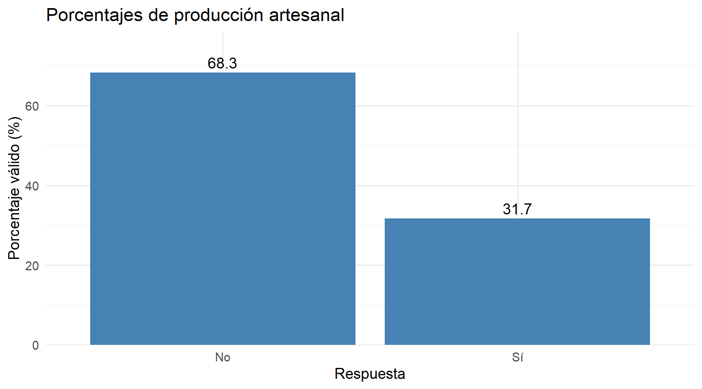
Las categorías mantienen el orden de frecuencia de lectura. El gráfico no debe ordenarse por tamaño.
Las etiquetas facilitan la lectura de valores; si se superponen, usa barras horizontales. La suma de los porcentajes válidos debe ser 100 % (salvo redondeo).
Polígono de frecuencias y vista ampliada. Un polígono conecta frecuencias por intervalo. La ampliación gráfica no debe alterar los estadísticos ni ocultar que existen valores mayores.
Une las frecuencias de intervalos contiguos; conserva los intervalos del histograma.
La ventana cambia, no se eliminan observaciones del cálculo. El máximo real puede estar fuera de la vista.
# Ampliamos la zona central sin filtrar datos.
g_zoom <- g_caja +
# Cambiamos la ventana visible sin excluir casos.
coord_cartesian(ylim = c(0, 30)) +
# Informamos que la vista no muestra todos los valores.
labs(subtitle = "Vista ampliada 0–30; existen valores superiores")
# Mostramos la versión ampliada.
print(g_zoom)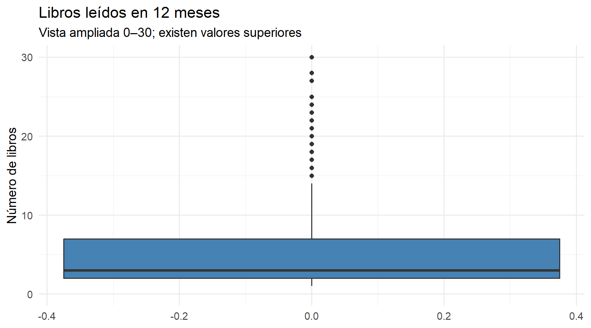
No interpretes la vista ampliada como si el máximo fuera 30. Consulta la caja completa y los estadísticos.
Barras agrupadas, apiladas y mapa de calor. Las dos primeras muestran recuentos; el mapa representa porcentajes por fila. Los tamaños de los grupos afectan los recuentos.
Este formato es útil para ggplot2: cada fila representa una combinación de categorías y su recuento, no una persona de la encuesta.
sexo respuesta n
1 Hombre Sí 1020
2 Mujer Sí 2867
3 Hombre No 4356
4 Mujer No 4011Compara recuentos lado a lado. Los tamaños de los grupos influyen en las alturas.
La altura de cada barra es el total del grupo; no es un porcentaje.
Esta variante utiliza por_fila, la tabla del cruce que calculamos antes. La necesitamos también para el mapa de calor. as.table() y as.data.frame() permiten pasar de una tabla de doble entrada a una fila por combinación. Ejecuta primero esta preparación si quieres hacer el mapa de calor.
# Convertimos los porcentajes por fila en una tabla de tres columnas.
porcentajes_tabla <- as.table(por_fila)
tabla_cruce_graf <- as.data.frame(porcentajes_tabla)
# Damos nombres a las columnas para utilizarlas en ggplot2.
names(tabla_cruce_graf) <- c("sexo", "respuesta", "porcentaje")
tabla_cruce_graf sexo respuesta porcentaje
1 Hombre Sí 18.97321
2 Mujer Sí 41.68363
3 Hombre No 81.02679
4 Mujer No 58.31637El siguiente código añade una paleta manual, marcas del eje y una ventana visible. Son opciones de presentación, no nuevos cálculos. geom_col() usa los porcentajes ya calculados; position = "stack" es su posición por defecto.
# Elegimos los datos y asignamos las variables a los ejes.
g_cruce_pct <- ggplot(
tabla_cruce_graf,
aes(x = sexo, y = porcentaje, fill = respuesta)
) +
# Apilamos los porcentajes dentro de cada sexo.
geom_col(position = "stack", width = 0.7) +
# Asignamos un color fijo a cada respuesta.
scale_fill_manual(values = c("Sí" = "#216873", "No" = "#D6B36A"), name = "Respuesta") +
# Mantenemos el eje en porcentajes de 0 a 100.
scale_y_continuous(breaks = seq(0, 100, 25)) +
# Fijamos la ventana sin descartar datos por redondeo.
coord_cartesian(ylim = c(0, 100)) +
# Etiquetamos los ejes y documentamos la fuente.
labs(
title = "Producción artesanal según sexo",
x = NULL,
y = "Porcentaje dentro del grupo (%)",
caption = "ENPCCL 2024 · versión pedagógica · sin ponderadores"
) +
# Aplicamos un tema legible para la página o una presentación.
theme_minimal(base_size = 14)
# Mostramos el gráfico guardado en el objeto.
print(g_cruce_pct)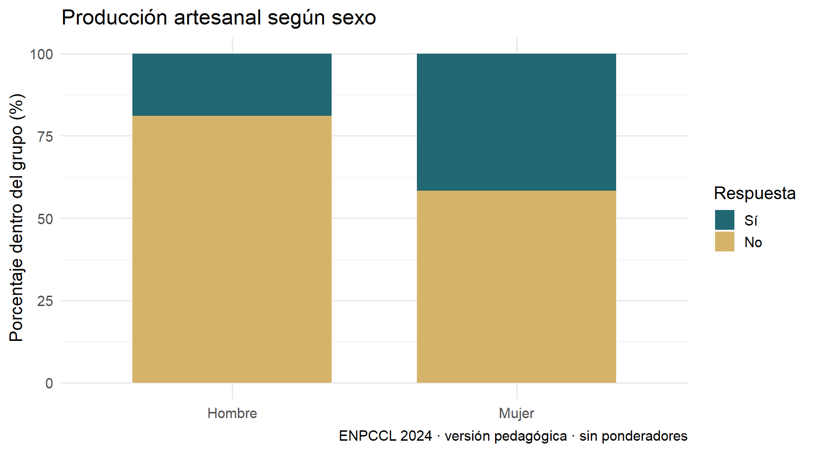
Cada celda representa un porcentaje por fila. Lee también el valor numérico, no solo el color.
# Una celda por combinación; el color representa el porcentaje por fila.
ggplot(tabla_cruce_graf, aes(x = respuesta, y = sexo, fill = porcentaje)) +
geom_tile() +
geom_text(aes(label = round(porcentaje, 1))) +
scale_fill_gradient(low = "lightyellow", high = "lightblue", limits = c(0, 100)) +
labs(title = "Porcentajes dentro de cada grupo", x = "Respuesta",
y = "Sexo", fill = "%") +
theme_minimal(base_size = 14)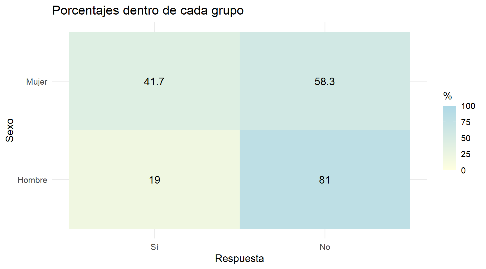
Compara medianas y dispersión de libros con respuesta válida en cada grupo. Es una extensión; no sustituye la contingencia.
# Conservamos los casos válidos de ambas variables.
datos_cajas <- subset(datos, !is.na(sexo) & !is.na(libros_cant))
# Dibujamos una caja por grupo.
ggplot(datos_cajas, aes(x = sexo, y = libros_cant)) +
geom_boxplot(fill = "steelblue") +
labs(title = "Libros según sexo", x = "Sexo", y = "Número de libros") +
theme_minimal(base_size = 14)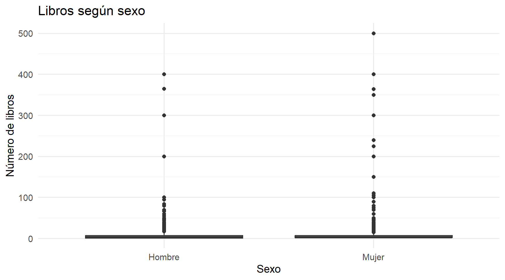
Para porcentajes apilados al 100 %, consulta el ejemplo principal.
La caja por grupo es una extensión descriptiva, no reemplaza el cruce categórico del trabajo final. Si aparecen celdas pequeñas, no exageres su interpretación.
Cambia títulos, color, ejes y tamaños sin alterar los datos. ggsave() guarda el objeto indicado. Las opciones avanzadas de escalas y paletas están en las barras al 100 % y el mapa de calor. En las barras con etiquetas, vjust ajusta su posición y expansion() deja espacio en el eje. coord_cartesian() amplía una zona sin eliminar observaciones.
# Personalizamos el gráfico sin cambiar los porcentajes.
g_reporte <- g_barras +
# Agregamos el N válido y la fuente.
labs(
subtitle = paste("N válido:", sum(frecuencias)),
caption = "ENPCCL 2024, versión pedagógica; resultados no ponderados"
) +
# Cambiamos el tema gráfico.
theme_bw(base_size = 14)
# Mostramos el gráfico personalizado.
print(g_reporte)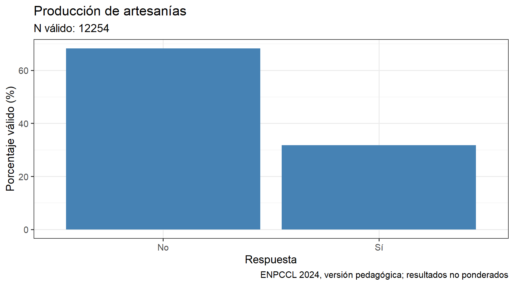
| Operador | Significado |
|---|---|
<- |
Guarda el resultado en un objeto. |
$ |
Accede a una columna por nombre. |
[] |
Selecciona filas y columnas. |
c() |
Reúne varios elementos. |
== / != |
Igual a / distinto de. |
> / < |
Mayor / menor que. |
>= / <= |
Mayor o igual / menor o igual. |
%in% |
Comprueba pertenencia a un conjunto. |
! |
Niega una condición. |
& / \| |
Y / o (condiciones lógicas). |
\|> |
Envía un resultado a la función siguiente. |
+ |
Añade capas a un gráfico de ggplot2. |
object not found
Comprueba ls() y exists("datos"). Si devuelve FALSE, ejecuta primero el bloque que crea el objeto. Guarda el script y sigue su orden.
could not find function
Revisa que el nombre de la función esté bien escrito. Para una función de ggplot2, ejecuta library(ggplot2). Si R dice que el paquete no está instalado, usa install.packages("ggplot2") una vez y vuelve a cargarlo.
cannot open file
Consulta getwd() y file.exists(archivo). Abre la carpeta del proyecto; no uses una ruta ajena.
unexpected symbol
Revisa comillas, comas y paréntesis en esa instrucción y la anterior. Ejecuta bloques completos.
+
Falta cerrar una expresión. Presiona Esc para cancelar y revisa paréntesis o comillas.
Consulta names(datos); R distingue mayúsculas y minúsculas.
Compara table(datos$inv_artesania, useNA = "always") con table(datos$artesania, useNA = "always"). Si aparecen NA que no esperabas, verifica los códigos originales y levels(); no apliques niveles incorrectos. Conserva siempre el original.
Confirma que sea una cantidad con is.numeric(datos$libros_cant). Revisa los códigos y cuenta los NA con sum(is.na(datos$libros_cant)). Luego utiliza mean(datos$libros_cant, na.rm = TRUE) si hay datos válidos.
Comprueba levels() y define el orden explícitamente con factor().
Revisa nrow() y N válido, filtros y ejes; confirma que el objeto existe.
Revisa el total válido y margin; comprueba rowSums() o colSums().
Comprueba que exista la carpeta, que el objeto del gráfico exista y que ggsave() haya terminado sin errores. Usa list.files() para verificar el archivo.
Los scripts son recursos de consulta posterior. Durante la clase, construye y guarda tu propio archivo analisis.R. Recuerda: el trabajo final puede realizarse individualmente o en parejas. Revisa su pauta oficial; la biblioteca no agrega requisitos ni evaluaciones.
Abre la encuesta que te interese, individualmente o en pareja. Crea una nueva carpeta con input, procesamiento y output, guarda el CSV y crea tu propio script desde cero. Consulta la pauta del trabajo final. Como preparación para el trabajo final, puedes partir por una encuesta, un tema, tres variables y la importación. Si quieres avanzar, prepara las variables, construye una primera tabla y un cruce. No es una actividad adicional de la clase ni una entrega.
Si no has elegido tema, explora edad_aux y scree_asist_memoria_vida de Cultura, y busca en el diccionario una cantidad pertinente. No es una pregunta obligatoria.
0 de 7 pasos
Preguntas, dudas y comentarios
El canal de consultas y comentarios de la sesión estará habilitado durante el desarrollo del curso.